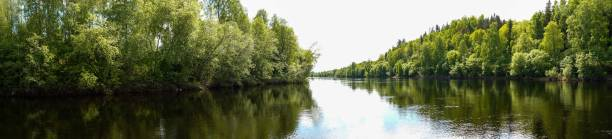
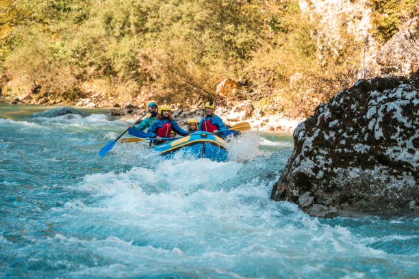
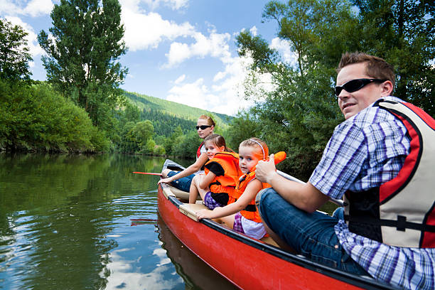
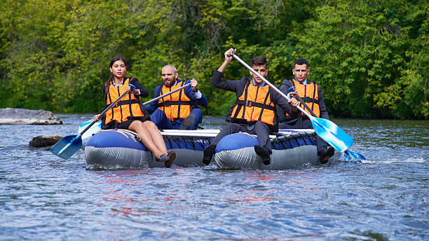
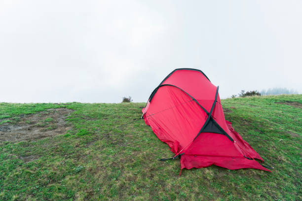

Colorado River Expedition
- Difficulty Level: Intermediate
- Departure Date: April 15, 2025
- Duration: 3 Days
- Cost: $450 per person
Trip Description:
The Colorado River Expedition is a thrilling journey through one of the most scenic river canyons in the world. Ideal for adventurous souls, this 3-day trip combines the thrill of white-water rapids with breathtaking landscapes. Each night, you’ll camp along the river under a starlit sky, enjoy delicious campfire meals, and swap stories with fellow adventurers. Daily rafting sessions will take you past towering canyon walls and through exhilarating rapids, making it a truly unforgettable experience.

Snake River Family Adventure
- Difficulty Level: Beginner
- Departure Date: May 5, 2025
- Duration: 1 Day
- Cost: $120 per person
Trip Description:
Perfect for families and first-time rafters, the Snake River Family Adventure offers a gentle introduction to river rafting. This day-long trip provides calm waters with a few small rapids, adding just the right touch of excitement for younger adventurers. You’ll float through a beautiful landscape of lush green hills and may even catch glimpses of local wildlife along the riverbanks. With experienced guides on hand, this trip ensures a safe, fun-filled day for all ages.


Green River Wilderness Challenge
- Difficulty Level: Expert
- Departure Date: September 10, 2025
- Duration: 6 Days
- Cost: $1,200 per person
Trip Description:
For experienced rafters seeking an intense adventure, the Green River Wilderness Challenge is an epic journey through remote and rugged terrain. This 6-day expedition will test your skills as you conquer challenging rapids and navigate the winding river bends of the deep canyons. The trip includes guided hikes to ancient rock formations and hidden waterfalls, offering a glimpse of the untouched beauty of the wilderness. Each night, you’ll set up camp under the stars, surrounded by the peace of nature.
| Trip ID | River Destination | Difficulty Level | Departure Date | Duration | Cost per Person | Available Spots | Trip Highlights |
|---|---|---|---|---|---|---|---|
| 101 | Colorado River | Intermediate | April 15, 2025 | 3 Days | $450 | 12 | Canyon views, rapids, and stargazing nights. |
| 102 | Snake River | Beginner | May 5, 2025 | 1 Day | $120 | 15 | Perfect for families with gentle rapids. |
| 103 | Salmon River | Advanced | June 20, 2025 | 5 Days | $950 | 8 | Adventure through deep canyons and challenging rapids. |
| 104 | Rogue River | Intermediate | July 4, 2025 | 4 Days | $750 | 10 | Unique wildlife, sandy beaches, and moderate rapids. |
| 105 | Colorado River Express | Beginner | August 1, 2025 | 1/2 Day | $75 | 20 | Quick adventure with scenic views and mild rapids. |
| 106 | Green River | Expert | September 10, 2025 | 6 Days | $1,200 | 6 | Rapids, canyons, and breathtaking wilderness. |
| 107 | Arkansas River | Intermediate | October 2, 2025 | 2 Days | $320 | 14 | Autumn views, exciting rapids, and camping. |
| 108 | New River Gorge | Beginner/Intermediate | April 20, 2025 | 3 Days | $500 | 12 | Combination of calm waters and fun rapids for all levels. |